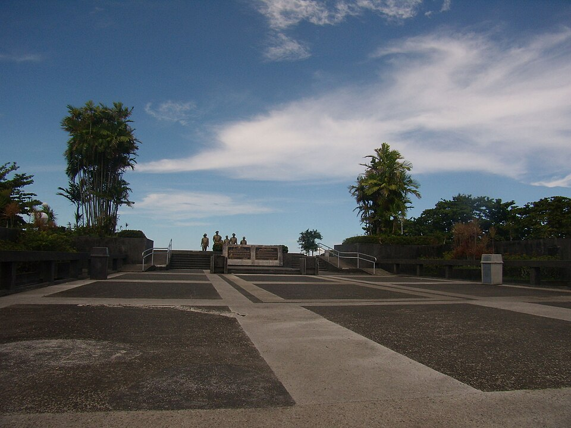

First recorded encounter
Homonhon was already home.
When the expedition led by Ferdinand Magellan reached Homonhon Island in Guiuan, Eastern Samar, it arrived where Visayan communities already lived, worked, traveled, and traded.
History is not separate from the view. It is part of every shore, bridge, recipe, and community along the route.
Communities have crossed these islands, traded along their shores, built homes beside their rivers, and carried traditions from one generation to the next. This is not a complete history; it is a route through a few moments that help explain the region today.
First recorded encounter
When the expedition led by Ferdinand Magellan reached Homonhon Island in Guiuan, Eastern Samar, it arrived where Visayan communities already lived, worked, traveled, and traded.
Memory and conflict
Balangiga became part of the history of the Philippine-American War. Its church bells later carried a longer story about loss, memory, and the return of cultural objects to their community.
A landmark can be beautiful and complicated at the same time.
A landing remembered

On October 20, 1944, General Douglas MacArthur and Filipino and American forces landed in Palo, Leyte. The landing began the liberation of the Philippines during World War II.
Rebuilding together
Typhoon Yolanda, internationally known as Haiyan, caused widespread loss in Eastern Visayas in November 2013. Rebuilding showed the enduring strength of local communities and the spirit of bayanihan.
Bayanihan: community strength made visible.
A living culture
History lives in the food people prepare, the mats they weave, the festivals they celebrate, and the stories they share with visitors.